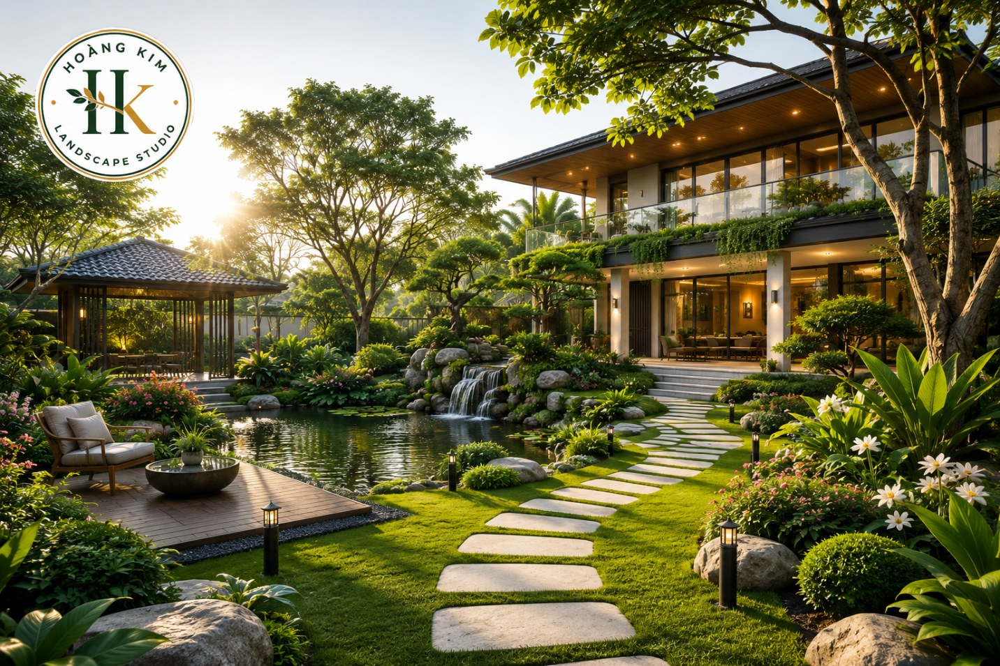

Case Study 01
Cải tạo bồn cảnh quan tại FPT AI Campus
Tổ chức lại bồn cây theo bố cục nhiều tầng, tận dụng cây hiện hữu phù hợp và nâng cao hiệu quả thẩm mỹ, che phủ, bảo dưỡng.
Đọc toàn bộ Case Study →Những câu chuyện dự án được trình bày xuyên suốt từ ý tưởng, hiện trạng, quá trình thi công đến kết quả hoàn thiện.
Tổ chức lại bồn cây theo bố cục nhiều tầng, tận dụng cây hiện hữu phù hợp và nâng cao hiệu quả thẩm mỹ, che phủ, bảo dưỡng.
Đọc toàn bộ Case Study →
Tìm hiểu 7 nguyên tắc giúp không gian cảnh quan đẹp, bền vững, dễ thi công và tiết kiệm chi phí bảo dưỡng.
Đọc toàn bộ Case Study →
Từ nguồn hạt tự thu hái tại Campus đến lô cây cao khoảng 30 cm, phục vụ chủ động nguồn cây cho công tác cảnh quan.
Đọc toàn bộ Case Study →
Từ hiện trạng khu đất có nhà sàn đến quá trình đo đạc, đào tạo hình, xử lý nền, trải khoảng 400m² bạt HDPE và cấp nước để hình thành hồ cảnh quan thực tế.
Đọc toàn bộ Case Study →